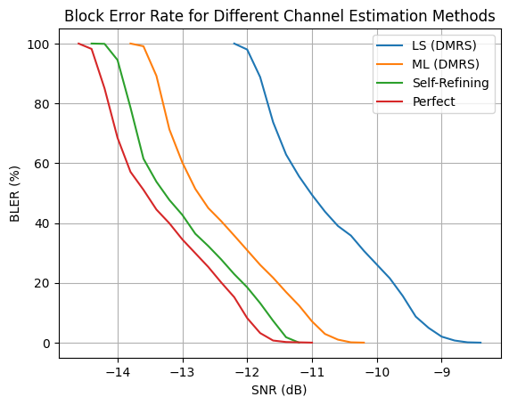

Evaluating End-to-End Communication Performance Using BLER
This notebook evaluates the trained channel estimation model within a complete end-to-end communication pipeline using Block Error Rate (BLER) as the performance metric. Unlike the NMSE evaluation, which measures channel estimation accuracy directly, BLER quantifies the impact of channel estimation on the successful decoding of transmitted data.
The evaluation compares several channel estimation approaches across a range of signal-to-noise ratio (SNR) values, including the trained neural network and conventional estimation methods. For each SNR value, the communication system transmits multiple transport blocks, performs channel estimation and decoding, and records the resulting BLER.
The generated BLER curves provide a practical measure of receiver performance and illustrate how improvements in channel estimation translate into improved communication reliability.
[1]:
import numpy as np
import time, os, torch
import matplotlib.pyplot as plt
from neoradium import BandwidthPart, PDSCH, CdlChannel, AntennaPanel, random, SnrScheduler
from ChEstNet import ChEstNet
from ChEstUtils import estimateChannelML, getPseudoPilotIndices
[2]:
# Load the trained model
modelPath = 'Models/Pretrained.pth' # Use the pre-trained model
# modelPath = 'Models/Trained.pth' # Use the model trained in the previous step (see MLChEstTrain.ipynb)
device = "cuda:0" if torch.cuda.is_available() else "mps" if torch.backends.mps.is_available() else "cpu"
model = ChEstNet(device) # Instantiate the model on the target device
model.loadParams(modelPath); # Load the trained model parameters
[3]:
# Calculate block error rates (BLER)
seed = 123
# Using maxSlots = 1000 may cause this experiment to take a long time to complete.
# You can use a smaller value to obtain quicker (though less precise) results.
maxSlots = 1000 # Number of Slots
snrScheduler = SnrScheduler(-12,0.2, fastStep=1) # Start at -13 dB, use increments of 0.2 dB
freqDomain = True # Apply channel in frequency domain
modulation = "16QAM"
numLayers = 2
bwp = BandwidthPart(numRbs=45, spacing=30) # Create a BandwidthPart object
# Create a two-layer PDSCH object with type-2 DMRS on symbols 2 and 11
pdsch = PDSCH(bwp, numLayers=numLayers, modulation=modulation)
pdsch.setDMRS(configType=2, additionalPos=1) # DMRS configuration
# Create the LDPC codec
# Note: The code that generated the results in the paper used LDPC numIter=20. Here
# we use the default value, numIter=5. Therefore, the results here may be
# slightly worse than those reported in the paper.
ldpc = pdsch.getLdpcCodec(coderates=490/1024)
channel = CdlChannel(bwp, 'C', delaySpread=300, carrierFreq=4e9, dopplerShift=5,
txAntenna = AntennaPanel([2,4], polarization="x"), # 16 TX antennas
rxAntenna = AntennaPanel([1,2], polarization="x")) # 4 RX antennas
def equalizeAndDecode(rxGrid, chanEst, errVar=None):
eqGrid, llrScales = pdsch.equalize(rxGrid, chanEst, errVar) # Equalization
llrs = pdsch.getLLRs(eqGrid, llrScales) # Demodulation (to LLRs)
decodedTxBlock, crcMatch = ldpc.decode(llrs[0]) # LDPC decoding
cbErrors = (crcMatch[1:]==False).sum() # Number of code block errors
return [cbErrors, len(crcMatch)-1], [decodedTxBlock, crcMatch]
chEstMethods = ["LS (DMRS)", "ML (DMRS)", "Self-Refining", "Perfect"]
results = {}
for chEstMethod in chEstMethods:
print(f'\nEvaluating BLER with {chEstMethod} channel {"knowledge" if chEstMethod=='Perfect' else "estimation"}')
if chEstMethod=="Self-Refining":
print("SNR(dB) TX Blocks Block Errors BLER(%) Ret. Saved Rec. Code Blocks")
print("------- --------- ------------ ------- ---------- ----------------")
else:
print("SNR(dB) TX Blocks Block Errors BLER(%)")
print("------- --------- ------------ -------")
snrScheduler.reset()
for snrDb in snrScheduler:
random.setSeed(seed)
channel.restart() # Reset the channel and the bandwidth part
totalRetransmissions = 0
retransmissionsSaved = 0
codeBlocksRecovered = 0
t0 = time.time() # Start the timer
blockErrors = 0
totalBlocks = 0
for s in range(maxSlots): # The inner loop doing 'numSlot' transmissions
pdsch.initGrid() # Create and initialize PDSCH's internal grid
numBits = pdsch.getBitCapacity()[0] # Number of bits available in the resource grid
txBlock = random.bits(ldpc.txBlockSizes[0]) # Create random transport block
rateMatchedCBs = ldpc.encode(txBlock, numBits)
pdsch.setPdschData(rateMatchedCBs) # Map/modulate the data to the resource grid
channelMatrix = channel.getChannelMatrix() # Get the channel matrix
precoder = pdsch.getPrecodingMatrix(channelMatrix) # Get the precoder matrix from the PDSCH object
perfectChannel = channel.getEffChannel(channelMatrix, precoder) # Get ground-truth effective channel
txGrid = bwp.createGrid(channelMatrix.shape[3]) # Create the transmitted resource grid
pdsch.precodeTo(txGrid, precoder) # Precode PDSCH data into the txGrid
if freqDomain:
rxGrid = txGrid.applyChannel(channelMatrix) # Apply the channel in the frequency domain
noisyRxGrid = rxGrid.addNoise(snrDb=snrDb) # Add noise in the frequency domain
else:
txWaveform = txGrid.ofdmModulate() # OFDM modulation
maxDelay = channel.getMaxDelay() # Calculate the maximum channel delay
txWaveform = txWaveform.pad(maxDelay) # Pad the waveform with zeros
rxWaveform = channel.applyToSignal(txWaveform) # Apply the channel to the waveform
noisyRxWaveform = rxWaveform.addNoise(snrDb=snrDb, bwp=bwp) # Add noise
offset = channel.getTimingOffset() # Get the timing offset for synchronization
syncedWaveform = noisyRxWaveform.sync(offset) # Synchronize the received waveform
noisyRxGrid = syncedWaveform.ofdmDemodulate(bwp) # OFDM-demodulate the synchronized waveform
if chEstMethod=="LS (DMRS)":
# LS channel estimation using DMRS
lsChannelMatrix, errVar = pdsch.estimateChannel(noisyRxGrid)
blerInfo, (decodedTxBlock, crcMatch) = equalizeAndDecode(noisyRxGrid, lsChannelMatrix, errVar)
elif chEstMethod=="ML (DMRS)":
# ML channel estimation using DMRS only
dmrsIdx = pdsch.grid.getReIndexes("DMRS")
mlChannelMatrix = estimateChannelML(model, dmrsIdx, pdsch.grid, noisyRxGrid)
blerInfo, (decodedTxBlock, crcMatch) = equalizeAndDecode(noisyRxGrid, mlChannelMatrix)
elif chEstMethod=="Self-Refining":
dmrsIdx = pdsch.grid.getReIndexes("DMRS")
mlChannelMatrix = estimateChannelML(model, dmrsIdx, pdsch.grid, noisyRxGrid)
blerInfo, (decodedTxBlock, crcMatch) = equalizeAndDecode(noisyRxGrid, mlChannelMatrix)
cbErrors, numCB = blerInfo
# Now try using pseudo-pilots
# Pseudo-pilots are relevant only when cbErrors ∈ {1,...,numCB-1}
relevantCbErrors = np.arange(1,numCB)
orgCbErrors = cbErrors
while cbErrors in relevantCbErrors:
pseudoPilotIndices = getPseudoPilotIndices(pdsch, ldpc, decodedTxBlock, crcMatch)
allPilotIndices = tuple(np.append(pseudoPilotIndices[i],dmrsIdx[i]) for i in [0,1,2])
mlChannelMatrix = estimateChannelML(model, allPilotIndices, pdsch.grid, noisyRxGrid)
blerInfo, (decodedTxBlock, crcMatch) = equalizeAndDecode(noisyRxGrid, mlChannelMatrix)
if blerInfo[0] >= cbErrors: break # No improvement
cbErrors = blerInfo[0]
totalRetransmissions += 1*(orgCbErrors in relevantCbErrors) # The retransmissions that could be saved
codeBlocksRecovered += orgCbErrors - cbErrors
retransmissionsSaved += 1*(cbErrors==0 and orgCbErrors>0)
elif chEstMethod=="Perfect":
blerInfo, (decodedTxBlock, crcMatch) = equalizeAndDecode(noisyRxGrid, perfectChannel)
channel.goNext() # Prepare the channel model for the next slot
blockErrors += 0 if crcMatch[0] else 1
totalBlocks += 1
bler = blockErrors*100/totalBlocks
print(f"\r{snrDb:7.1f} {totalBlocks:9,d} {blockErrors:12,d} {bler:7.2f} " +
(f"{retransmissionsSaved:10,d} {codeBlocksRecovered:17,d}" if chEstMethod=="Self-Refining" else ""), end='')
snrScheduler.setData(bler)
print("")
results[chEstMethod] = snrScheduler.getSnrsAndData()
Evaluating BLER with LS (DMRS) channel estimation
SNR(dB) TX Blocks Block Errors BLER(%)
------- --------- ------------ -------
-12.0 1,000 980 98.00
-12.2 1,000 1,000 100.00
-12.4 1,000 1,000 100.00
-11.8 1,000 888 88.80
-11.6 1,000 737 73.70
-11.4 1,000 629 62.90
-11.2 1,000 556 55.60
-11.0 1,000 494 49.40
-10.8 1,000 438 43.80
-10.6 1,000 390 39.00
-10.4 1,000 358 35.80
-10.2 1,000 307 30.70
-10.0 1,000 261 26.10
-9.8 1,000 215 21.50
-9.6 1,000 156 15.60
-9.4 1,000 87 8.70
-9.2 1,000 49 4.90
-9.0 1,000 20 2.00
-8.8 1,000 7 0.70
-8.6 1,000 1 0.10
-8.4 1,000 0 0.00
-8.2 1,000 0 0.00
Evaluating BLER with ML (DMRS) channel estimation
SNR(dB) TX Blocks Block Errors BLER(%)
------- --------- ------------ -------
-12.0 1,000 309 30.90
-12.2 1,000 358 35.80
-12.4 1,000 406 40.60
-12.6 1,000 450 45.00
-12.8 1,000 514 51.40
-13.0 1,000 602 60.20
-13.2 1,000 713 71.30
-13.4 1,000 892 89.20
-13.6 1,000 991 99.10
-13.8 1,000 1,000 100.00
-14.0 1,000 1,000 100.00
-11.8 1,000 260 26.00
-11.6 1,000 217 21.70
-11.4 1,000 169 16.90
-11.2 1,000 124 12.40
-11.0 1,000 71 7.10
-10.8 1,000 29 2.90
-10.6 1,000 10 1.00
-10.4 1,000 1 0.10
-10.2 1,000 0 0.00
-10.0 1,000 0 0.00
Evaluating BLER with Self-Refining channel estimation
SNR(dB) TX Blocks Block Errors BLER(%) Ret. Saved Rec. Code Blocks
------- --------- ------------ ------- ---------- ----------------
-12.0 1,000 185 18.50 124 248
-12.2 1,000 229 22.90 129 254
-12.4 1,000 278 27.80 128 249
-12.6 1,000 323 32.30 128 241
-12.8 1,000 364 36.40 150 295
-13.0 1,000 427 42.70 175 296
-13.2 1,000 477 47.70 236 395
-13.4 1,000 538 53.80 355 605
-13.6 1,000 615 61.50 376 815
-13.8 1,000 786 78.60 214 582
-14.0 1,000 945 94.50 55 186
-14.2 1,000 999 99.90 1 10
-14.4 1,000 1,000 100.00 0 0
-14.6 1,000 1,000 100.00 0 0
-11.8 1,000 132 13.20 128 280
-11.6 1,000 73 7.30 144 313
-11.4 1,000 18 1.80 151 285
-11.2 1,000 0 0.00 124 205
-11.0 1,000 0 0.00 71 88
Evaluating BLER with Perfect channel knowledge
SNR(dB) TX Blocks Block Errors BLER(%)
------- --------- ------------ -------
-12.0 1,000 82 8.20
-12.2 1,000 152 15.20
-12.4 1,000 201 20.10
-12.6 1,000 253 25.30
-12.8 1,000 299 29.90
-13.0 1,000 345 34.50
-13.2 1,000 399 39.90
-13.4 1,000 445 44.50
-13.6 1,000 511 51.10
-13.8 1,000 571 57.10
-14.0 1,000 685 68.50
-14.2 1,000 850 85.00
-14.4 1,000 982 98.20
-14.6 1,000 1,000 100.00
-14.8 1,000 1,000 100.00
-11.8 1,000 32 3.20
-11.6 1,000 7 0.70
-11.4 1,000 2 0.20
-11.2 1,000 1 0.10
-11.0 1,000 0 0.00
-10.8 1,000 0 0.00
[4]:
for i,chEstMethod in enumerate(chEstMethods):
snrDbs, blers = results[chEstMethod]
plt.plot(snrDbs, blers, label=chEstMethod)
plt.legend()
plt.title("Block Error Rate for Different Channel Estimation Methods")
plt.grid()
plt.xlabel("SNR (dB)")
plt.ylabel("BLER (%)")
plt.show()

[ ]: